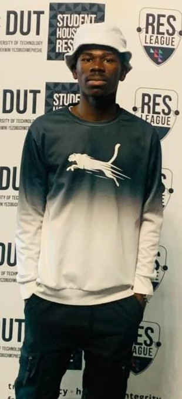

Open to opportunities
Hi, I'm Thandazani
Hi, I'm Thandazani
Dlamini.
> BINCT Student
"I'm a BINCT student passionate about computer networking, IT infrastructure, and exploring how technology connects people and systems."

NODE // T.DLAMINI
STATUS: 200 OK
What I do
Where I focus
Networking
Routing, switching, subnetting and network design — building infrastructure that stays online and stays secure.
Systems & Scripting
Linux administration and scripting to automate the repetitive stuff — backups, monitoring, setup.
Software Development
Comfortable across the fundamentals — from clean front-ends to the logic that runs behind them.